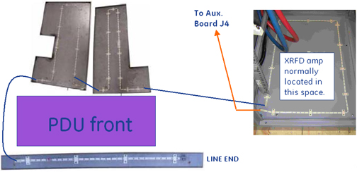
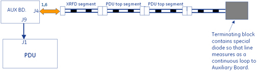
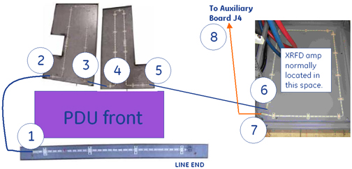
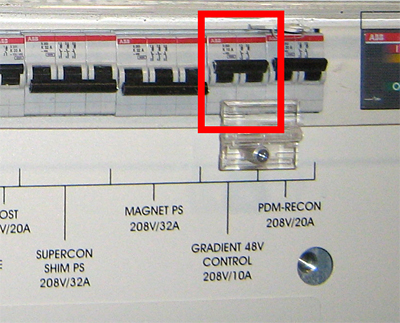
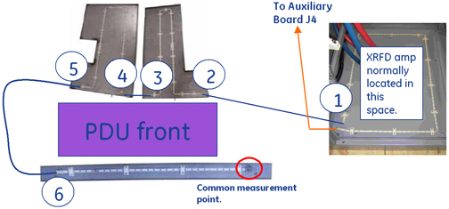

Operating Documentation
Direction 5500113, Rev# 3
Discovery MR450 1.5T Service Methods
Module Version 1.0, Version Date 8/19/08
Operating Documentation |
Leak detection consists of a series of cable segments positioned in different areas of the PGR Cabinet and joined by interconnecting cables and connectors. Each cable segment is a two-conductor, ladder-line design whereby the parallel conductors are separated a set distance apart the length of the cable by an insulating dielectric. These cables are located in front of the PDU, above the PDU, and under the XRFD amplifier. They are interconnected as shown in Illustration 1.
Illustration 1: Cable Interconnections

The Auxiliary Board connects to one end of interconnected string of cable segments and constantly measures the total line impedance. Any moisture on the line from a leak, etc. results in an impedance that causes the Auxiliary Board to open the main PDU contactor, thus removing power from the input of the PDU.
Illustration 2: Auxiliary Board Connections

Opening any of the connections between line segments, however, causes the Auxiliary Board to latch into failing state whereby an error is logged and scanning is inhibited. Opening a line segment does not result in PDU breaker trip. Recovery from latched state is only possible by reconnecting segments and then cycling power to Auxiliary Board (Gradient 48V Control breaker on front of PDU).
| Based upon observed symptoms, refer to the appropriate Troubleshooting section below. | |
| Section | Failure Mode and Symptom |
| Section 2.1 | Failure Mode 1 – PDU breaker tripping? |
| Section 2.2 | Failure Mode 2 – PDU breaker tripping, lines dry. |
| Section 2.3 | Failure Mode 3 – PDU leak sensor disconnect error; scanning inhibited, no breaker trip. |
Referring to Illustration 1, visually inspect for moisture on lines. LOTO incoming power to PGR cabinet and repair any leaks. Use absorbent material to thoroughly dry any moisture from both above, below, and around leak detection lines.
| ||||
| SHOCK HAZARD AND DEATH BY ELECTROCUTION! | ||||
| standing water inside pgr cabinet poses electrocution risk. | ||||
| UNDER NO CIRCUMSTANCES SHOULD YOU PROCEED UNLESS YOU HAVE VISUALLY INSPECTED AND CONFIRMED THAT NO STANDING WATER IS PRESENT INSIDE CABINET. |
Disconnect each line detection segment in order shown and then reset PDU breaker. It is normal for a disconnect error to be logged when this is done.
Point at where breaker does not trip indicates faulty line segment in previous section. See Illustration 3.
Illustration 3: Line Segment Check Points

Replace or repair faulty line segment.
If all cables including connection at location 8 disconnected and PDU main breaker still tripping then replace Auxiliary Board.
Confirm reattachment of all circuit connectors.
After replacement must cycle power to Auxiliary Board (Gradient 48V Control breaker on PDU) in order to reset it from latched fault condition. See Illustration 4.
Illustration 4: PDU Breaker Location

Check that cable is attached at J4 on Auxiliary Board as shown in Illustration 5.
Illustration 5: Auxiliary Board

Trace other end of cable and confirm it is labeled Leak Sensor 1-A and attaches to end of leak detector segment routed in front of XRFD amplifier.
Perform resistance checks of leak sensor circuit in order to find location of high impedance.
Disconnect cable connector inspected earlier and labeled Leak Sensor 1-A.
Illustration 6: Performing Resistance Check

Use a digital multimeter to measure resistance from terminal block contact to corresponding connector conductor as shown in Illustration 6. May need to swap measurement points at one end in order to locate correct line.
Resistance between two points on same line should measure 10 ohms ± 10 ohms.
Repeat measurement on opposite line and confirm same result.
If both measurements good then Auxiliary Board must be tested.
Reattach leak detection cable connection in front of XRFD.
Perform Host PC shutdown from CSD Utilities and confirm afterwards that ICNs also shut down.
Place all circuit breakers in the OFF (down) position as shown in Illustration 7.
Illustration 7: Circuit Breakers on PDU

Rotate main PDU circuit breaker (not shown), in the OFF position to remove input power from PDU.
Roll up end of paper towel and wet 2 inch (5cm) section with water.
Wrap at least one turn of the moistened section of towel tightly around the exposed middle section of leak detection line located in front of PDU (see Illustration 8).
Illustration 8: Leak Detector
Rotate main PDU circuit breaker in ON position to apply input power to PDU.
Place the breaker labeled Gradient 48V Control 208V/10A on PDU in the ON (up) position. This will power on fans and the Auxiliary Board.
Wait 10 seconds for PDU main breaker to trip.
If PDU main breaker trips then repair or replace the terminated leak detection segment (section that was tested) located in front of the PDU.
If PDU main breaker does not trip then repeat steps c to i once. If PDU main breaker still does not trip, replace the Auxiliary Board.
If bad measurement seen in step 3, move to next connection segment in leak circuit (see Illustration 9). Keep repeating measurement test, in order shown, at each segment until faulty connection located. All measurements referenced to termination block.
Illustration 9: Measurement Points

Replace or repair faulty connection.
Confirm reattachment of all circuit connectors.
If necessary thoroughly dry dampened section of leak detect line.
Must cycle power to Auxiliary Board (Gradient 48V Control breaker on PDU) to recover it from latched fault condition.
Any remaining PDU circuit breakers can now be put back in ON position.